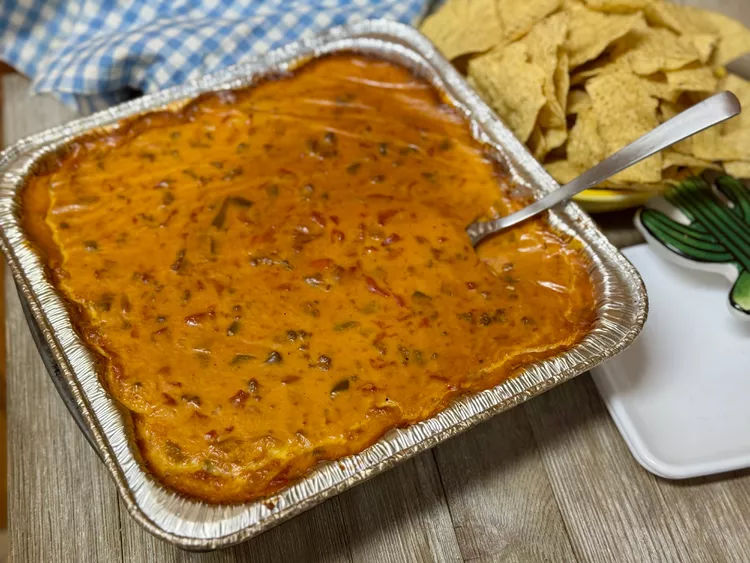

Smoked Queso Dip

This smoked queso dip has all the flavors you love in a queso with an added punch of flavor from the smoker.
This will be the first thing to go at your next tailgate party. Serve with tortilla chips.
Submitted by Nicole Russell
Ingredients
- 1 onion, chopped
- 1 (1 pound) tube bulk sausage, crumbled
- 2 pounds processed cheese food, such as Velveeta®, cubed
- 8 ounces Cheddar cheese, shredded
- 2 (10 ounce) cans diced tomatoes with green chiles, such as Ro-tel®
- 1 (10.5 ounce) can condensed cream of chicken soup
- 2 large whole jalapeno peppers
Steps
- Preheat an outdoor smoker to 225 degrees F (107 degrees C).
- Add onion and sausage to a large skillet and cook over medium-high heat for 8 minutes. Drain any excess grease and add sausage back to the skillet.
- To the skillet, add Velveeta, shredded Cheddar, Ro-tel and cream of chicken soup. Stir to combine. Transfer to a 9x9-inch disposable aluminum pan.
- Place pan on a rack in the smoker. Place whole jalapenos next to the pan. Smoke for 2 hours, stirring the cheese mixture every hour.
- Transfer jalapenos to a cutting board. Cut in half lengthwise. Discard seeds and vein. Chop jalapenos and stir into the cheese mixture.
- Smoke for 1 hour more. Stir and serve immediately. Happy dipping!
Home